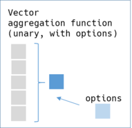

Vector
Class RedAmber::Vector represents a series of data in the DataFrame.
Constructor
Create from a column in a DataFrame
ruby df = DataFrame.new(x: [1, 2, 3]) df[:x] # => #<RedAmber::Vector(:uint8, size=3):0x000000000000f4ec> [1, 2, 3]
New from an Array
“‘ruby vector = Vector.new([1, 2, 3]) # or vector = Vector.new(1, 2, 3) # or vector = Vector.new(1..3) # or vector = Vector.new(Arrow::Array.new([1, 2, 3]) # or require ’arrow-numo-narray’ vector = Vector.new(Numo::Int8[1, 2, 3])
# => #<RedAmber::Vector(:uint8, size=3):0x000000000000f514> [1, 2, 3] “‘
Properties
to_s
values, to_a, entries
indices, indexes, indeces
Return indices in an Array.
to_ary
It implicitly converts a Vector to an Array when required.
“‘ruby [1, 2] + Vector.new([3, 4])
# => [1, 2, 3, 4] “‘
size, length, n_rows, nrow
empty?
type
boolean?, numeric?, string?, temporal?
type_class
each, map, collect
If block is not given, returns Enumerator.
n_nils, n_nans
-
n_nullsis an alias ofn_nils
has_nil?
Returns true if self has any nil. Otherwise returns false.
inspect(limit: 80)
-
limitsets size limit to display a long array.vector = Vector.new((1..50).to_a) # => #<RedAmber::Vector(:uint8, size=50):0x000000000000f528> [1, 2, 3, 4, 5, 6, 7, 8, 9, 10, 11, 12, 13, 14, 15, 16, 17, 18, 19, 20, 21, 22, ... ]
Selecting Values
take(indices), [](indices)
-
Acceptable class for indices:
-
Integer, Float
-
Vector of integer or float
-
Arrow::Arry of integer or float
-
Negative index is also OK like the Ruby’s primitive Array.
array = Vector.new(%w[A B C D E])
indices = Vector.new([0.1, -0.5, -5.1])
array.take(indices)
# or
array[indices]
# =>
#<RedAmber::Vector(:string, size=3):0x000000000000f820>
["A", "E", "A"]
filter(booleans), select(booleans), [](booleans)
-
Acceptable class for booleans:
-
An array of true, false, or nil
-
Boolean Vector
-
Arrow::BooleanArray
array = Vector.new(%w[A B C D E])
booleans = [true, false, nil, false, true]
array.filter(booleans)
# or
array[booleans]
# =>
#<RedAmber::Vector(:string, size=2):0x000000000000f21c>
["A", "E"]
filter and select also accepts a block.
Functions
Unary aggregations: vector.func => scalar

| Method | Boolean | Numeric | String | Options | Remarks |
|---|---|---|---|---|---|
| ✓ ‘all?` | ✓ | ✓ ScalarAggregate | alias ‘all` | ||
| ✓ ‘any?` | ✓ | ✓ ScalarAggregate | alias ‘any` | ||
| ✓ ‘approximate_median` | ✓ | ✓ ScalarAggregate | alias ‘median` | ||
| ✓ ‘count` | ✓ | ✓ | ✓ | ✓ Count | |
| ✓ ‘count_distinct` | ✓ | ✓ | ✓ | ✓ Count | alias ‘count_uniq` |
| [ ]‘index` | [ ] | [ ] | [ ] | [ ] Index | |
| ✓ ‘max` | ✓ | ✓ | ✓ | ✓ ScalarAggregate | |
| ✓ ‘mean` | ✓ | ✓ | ✓ ScalarAggregate | ||
| ✓ ‘min` | ✓ | ✓ | ✓ | ✓ ScalarAggregate | |
| ✓ ‘min_max` | ✓ | ✓ | ✓ | ✓ ScalarAggregate | |
| [ ]‘mode` | [ ] | [ ] Mode | |||
| ✓ ‘product` | ✓ | ✓ | ✓ ScalarAggregate | ||
| ✓ ‘quantile` | ✓ | ✓ Quantile | Specify probability in (0..1) by a parameter (default=0.5) | ||
| ✓ ‘sd ` | ✓ | ddof: 1 at ‘stddev` | |||
| ✓ ‘stddev` | ✓ | ✓ Variance | ddof: 0 by default | ||
| ✓ ‘sum` | ✓ | ✓ | ✓ ScalarAggregate | ||
| [ ]‘tdigest` | [ ] | [ ] TDigest | |||
| ✓ ‘var ` | ✓ | ddof: 1 at ‘variance` alias `unbiased_variance` |
|||
| ✓ ‘variance` | ✓ | ✓ Variance | ddof: 0 by default |
Options can be used as follows. See the document of C++ function for detail.
double = Vector.new([1, 0/0.0, -1/0.0, 1/0.0, nil, ""])
#=>
#<RedAmber::Vector(:double, size=6):0x000000000000f910>
[1.0, NaN, -Infinity, Infinity, nil, 0.0]
double.count #=> 5
double.count(mode: :only_valid) #=> 5, default
double.count(mode: :only_null) #=> 1
double.count(mode: :all) #=> 6
boolean = Vector.new([true, true, nil])
#=>
#<RedAmber::Vector(:boolean, size=3):0x000000000000f924>
[true, true, nil]
boolean.all #=> true
boolean.all(skip_nulls: true) #=> true
boolean.all(skip_nulls: false) #=> false
Check if function is an aggregation function: Vector.aggregate?(function)
Return true if function is an unary aggregation function. Otherwise return false.
Treat aggregation function as an element-wise function: propagate(function)
Spread the return value of an aggregate function as if it is a element-wise function.
vec = Vector.new(1, 2, 3, 4)
vec.propagate(:mean)
# =>
#<RedAmber::Vector(:double, size=4):0x000000000001985c>
[2.5, 2.5, 2.5, 2.5]
#propagate also accepts a block to compute with a customized aggregation function yielding a scalar.
vec.propagate { |v| v.mean.round }
# =>
#<RedAmber::Vector(:uint8, size=4):0x000000000000cb98>
[3, 3, 3, 3]
Unary element-wise: vector.func => vector

| Method | Boolean | Numeric | String | Options | Remarks |
|---|---|---|---|---|---|
| ✓ ‘-@` | ✓ | as ‘-vector` | |||
| ✓ ‘negate` | ✓ | ‘-@` | |||
| ✓ ‘abs` | ✓ | ||||
| ✓ ‘acos` | ✓ | ||||
| ✓ ‘asin` | ✓ | ||||
| ✓ ‘atan` | ✓ | ||||
| ✓ ‘bit_wise_not` | (✓) | integer only | |||
| ✓ ‘ceil` | ✓ | ||||
| ✓ ‘cos` | ✓ | ||||
| ✓‘fill_nil_backward` | ✓ | ✓ | ✓ | ||
| ✓‘fill_nil_forward` | ✓ | ✓ | ✓ | ||
| ✓ ‘floor` | ✓ | ||||
| ✓ ‘invert` | ✓ | ‘!`, alias `not` | |||
| ✓ ‘ln` | ✓ | ||||
| ✓ ‘log10` | ✓ | ||||
| ✓ ‘log1p` | ✓ | Compute natural log of (1+x) | |||
| ✓ ‘log2` | ✓ | ||||
| ✓ ‘round` | ✓ | ✓ Round (:mode, :n_digits) | |||
| ✓ ‘round_to_multiple` | ✓ | ✓ RoundToMultiple :mode, :multiple | multiple must be an Arrow::Scalar | ||
| ✓ ‘sign` | ✓ | ||||
| ✓ ‘sin` | ✓ | ||||
| ✓‘sort_indexes` | ✓ | ✓ | ✓ | :order | alias ‘sort_indices` |
| ✓ ‘tan` | ✓ | ||||
| ✓ ‘trunc` | ✓ |
Examples of options for #round;
-
:n-digitsThe number of digits to show. -
round_modeSpecify rounding mode.
double = Vector.new([15.15, 2.5, 3.5, -4.5, -5.5])
# => [15.15, 2.5, 3.5, -4.5, -5.5]
double.round
# => [15.0, 2.0, 4.0, -4.0, -6.0]
double.round(mode: :half_to_even)
# => Default. Same as double.round
double.round(mode: :towards_infinity)
# => [16.0, 3.0, 4.0, -5.0, -6.0]
double.round(mode: :half_up)
# => [15.0, 3.0, 4.0, -4.0, -5.0]
double.round(mode: :half_towards_zero)
# => [15.0, 2.0, 3.0, -4.0, -5.0]
double.round(mode: :half_towards_infinity)
# => [15.0, 3.0, 4.0, -5.0, -6.0]
double.round(mode: :half_to_odd)
# => [15.0, 3.0, 3.0, -5.0, -5.0]
double.round(n_digits: 0)
# => Default. Same as double.round
double.round(n_digits: 1)
# => [15.2, 2.5, 3.5, -4.5, -5.5]
double.round(n_digits: -1)
# => [20.0, 0.0, 0.0, -0.0, -10.0]
Binary element-wise: vector.func(vector) => vector

| Method | Boolean | Numeric | String | Options | Remarks |
|---|---|---|---|---|---|
| ✓ ‘add` | ✓ | ‘+` | |||
| ✓ ‘atan2` | ✓ | ||||
| ✓ ‘and_kleene` | ✓ | ‘&` | |||
| ✓ ‘and_org ` | ✓ | ‘and` in Red Arrow | |||
| ✓ ‘and_not` | ✓ | ||||
| ✓ ‘and_not_kleene` | ✓ | ||||
| ✓ ‘bit_wise_and` | (✓) | integer only | |||
| ✓ ‘bit_wise_or` | (✓) | integer only | |||
| ✓ ‘bit_wise_xor` | (✓) | integer only | |||
| ✓ ‘divide` | ✓ | ‘/` | |||
| ✓ ‘equal` | ✓ | ✓ | ✓ | ‘==`, alias `eq` | |
| ✓ ‘greater` | ✓ | ✓ | ✓ | ‘>`, alias `gt` | |
| ✓ ‘greater_equal` | ✓ | ✓ | ✓ | ‘>=`, alias `ge` | |
| ✓ ‘is_finite` | ✓ | ||||
| ✓ ‘is_inf` | ✓ | ||||
| ✓ ‘is_na` | ✓ | ✓ | ✓ | ||
| ✓ ‘is_nan` | ✓ | ||||
| [ ]‘is_nil` | ✓ | ✓ | ✓ | [ ] Null | alias ‘is_null` |
| ✓ ‘is_valid` | ✓ | ✓ | ✓ | ||
| ✓ ‘less` | ✓ | ✓ | ✓ | ‘<`, alias `lt` | |
| ✓ ‘less_equal` | ✓ | ✓ | ✓ | ‘<=`, alias `le` | |
| ✓ ‘logb` | ✓ | logb(b) Compute base ‘b` logarithm | |||
| [ ]‘mod` | [ ] | ‘%` | |||
| ✓ ‘multiply` | ✓ | ‘*` | |||
| ✓ ‘not_equal` | ✓ | ✓ | ✓ | ‘!=`, alias `ne` | |
| ✓ ‘or_kleene` | ✓ | ‘|` | |||
| ✓ ‘or_org` | ✓ | ‘or` in Red Arrow | |||
| ✓ ‘power` | ✓ | ‘**` | |||
| ✓ ‘subtract` | ✓ | ‘-` | |||
| ✓ ‘shift_left` | (✓) | ‘<<`, integer only | |||
| ✓ ‘shift_right` | (✓) | ‘>>`, integer only | |||
| ✓ ‘xor` | ✓ | ‘^` |
uniq
Returns a new array with distinct elements.
tally and value_counts
Compute counts of unique elements and return a Hash.
It returns almost same result as Ruby’s tally. These methods consider NaNs are same.
“‘ruby array = [0.0/0, Float::NAN] array.tally #=> NaN=>1
vector = Vector.new(array) vector.tally #=> NaN=>2 vector.value_counts #=> NaN=>2 “ ###index(element)‘
Returns index of specified element.
quantiles(probs = [0.0, 0.25, 0.5, 0.75, 1.0], interpolation: :linear, skip_nils: true, min_count: 0)
Returns quantiles for specified probabilities in a DataFrame.
sort_indexes, sort_indices, array_sort_indices
Coerce
vector = Vector.new(1,2,3)
# =>
#<RedAmber::Vector(:uint8, size=3):0x00000000000decc4>
[1, 2, 3]
# Vector's `#*` method
vector * -1
# =>
#<RedAmber::Vector(:int16, size=3):0x00000000000e3698>
[-1, -2, -3]
# coerced calculation
-1 * vector
# =>
#<RedAmber::Vector(:int16, size=3):0x00000000000ea4ac>
[-1, -2, -3]
# `@-` operator
-vector
# =>
#<RedAmber::Vector(:uint8, size=3):0x00000000000ee7b4>
[255, 254, 253]
Update vector’s value
replace(specifier, replacer) => vector
-
Accepts Scalar, Range of Integer, Vector, Array, Arrow::Array as a specifier
-
Accepts Scalar, Vector, Array and Arrow::Array as a replacer.
-
Boolean specifiers specify the position of replacer in true.
-
If booleans.any is false, no replacement happen and return self.
-
Index specifiers specify the position of replacer in indices.
-
replacer specifies the values to be replaced.
-
The number of true in booleans must be equal to the length of replacer
vector = Vector.new([1, 2, 3])
booleans = [true, false, true]
replacer = [4, 5]
vector.replace(booleans, replacer)
# =>
#<RedAmber::Vector(:uint8, size=3):0x000000000001ee10>
[4, 2, 5]
-
Scalar value in replacer can be broadcasted.
replacer = 0
vector.replace(booleans, replacer)
# =>
#<RedAmber::Vector(:uint8, size=3):0x000000000001ee10>
[0, 2, 0]
-
Returned data type is automatically up-casted by replacer.
replacer = 1.0
vector.replace(booleans, replacer)
# =>
#<RedAmber::Vector(:double, size=3):0x0000000000025d78>
[1.0, 2.0, 1.0]
-
Position of nil in booleans is replaced with nil.
booleans = [true, false, nil]
replacer = -1
vector.replace(booleans, replacer)
=>
#<RedAmber::Vector(:int8, size=3):0x00000000000304d0>
[-1, 2, nil]
-
replacer can have nil in it.
booleans = [true, false, true]
replacer = [nil]
vector.replace(booleans, replacer)
=>
#<RedAmber::Vector(:int8, size=3):0x00000000000304d0>
[nil, 2, nil]
-
An example to replace ‘NA’ to nil.
vector = Vector.new(['A', 'B', 'NA'])
vector.replace(vector == 'NA', nil)
# =>
#<RedAmber::Vector(:string, size=3):0x000000000000f8ac>
["A", "B", nil]
-
Specifier in indices.
Specified indices are used ‘as sorted’. Position in indices and replacer may not have correspondence.
vector = Vector.new([1, 2, 3])
indices = [2, 1]
replacer = [4, 5]
vector.replace(indices, replacer)
# =>
#<RedAmber::Vector(:uint8, size=3):0x000000000000f244>
[1, 4, 5] # not [1, 5, 4]
fill_nil_forward, fill_nil_backward => vector
Propagate the last valid observation forward (or backward). Or preserve nil if all previous values are nil or at the end.
integer = Vector.new([0, 1, nil, 3, nil])
integer.fill_nil_forward
# =>
#<RedAmber::Vector(:uint8, size=5):0x000000000000f960>
[0, 1, 1, 3, 3]
integer.fill_nil_backward
# =>
#<RedAmber::Vector(:uint8, size=5):0x000000000000f974>
[0, 1, 3, 3, nil]
boolean_vector.if_else(true_choice, false_choice) => vector
Choose values based on self. Self must be a boolean Vector.
true_choice, false_choice must be of the same type scalar / array / Vector. nil values in cond will be promoted to the output.
This example will normalize negative indices to positive ones.
indices = Vector.new([1, -1, 3, -4])
array_size = 10
normalized_indices = (indices < 0).if_else(indices + array_size, indices)
# =>
#<RedAmber::Vector(:int16, size=4):0x000000000000f85c>
[1, 9, 3, 6]
is_in(values) => boolean vector
For each element in self, return true if it is found in given values, false otherwise. By default, nulls are matched against the value set. (This will be changed in SetLookupOptions: not impremented.)
vector = Vector.new %W[A B C D]
values = ['A', 'C', 'X']
vector.is_in(values)
# =>
#<RedAmber::Vector(:boolean, size=4):0x000000000000f2a8>
[true, false, true, false]
values are casted to the same Class of Vector.
vector = Vector.new([1, 2, 255])
vector.is_in(1, -1)
# =>
#<RedAmber::Vector(:boolean, size=3):0x000000000000f320>
[true, false, true]
shift(amount = 1, fill: nil)
Shift vector’s values by specified amount. Shifted space is filled by value fill.
vector = Vector.new([1, 2, 3, 4, 5])
vector.shift
# =>
#<RedAmber::Vector(:uint8, size=5):0x00000000000072d8>
[nil, 1, 2, 3, 4]
vector.shift(-2)
# =>
#<RedAmber::Vector(:uint8, size=5):0x0000000000009970>
[3, 4, 5, nil, nil]
vector.shift(fill: Float::NAN)
# =>
#<RedAmber::Vector(:double, size=5):0x0000000000011d3c>
[NaN, 1.0, 2.0, 3.0, 4.0]
split_to_columns(sep = ' ', limit = 0)
Split string type Vector with any ASCII whitespace as separator. Returns an Array of Vectors.
vector = Vector.new(['a b', 'c d', 'e f'])
vector.split_to_columns
#=>
[#<RedAmber::Vector(:string, size=3):0x00000000000363a8>
["a", "c", "e"]
,
#<RedAmber::Vector(:string, size=3):0x00000000000363bc>
["b", "d", "f"]
]
It will be used for column splitting in DataFrame.
df = DataFrame.new(year_month: %w[2022-01 2022-02 2022-03])
.assign(:year, :month) { year_month.split_to_columns('-') }
.drop(:year_month)
#=>
#<RedAmber::DataFrame : 3 x 2 Vectors, 0x000000000000f974>
year month
<string> <string>
0 2022 01
1 2022 02
2 2022 03
split_to_rows(sep = ' ', limit = 0)
Split string type Vector with any ASCII whitespace as separator. Returns an flattend into rows by Vector.
vector = Vector.new(['a b', 'c d', 'e f'])
vector.split_to_rows
#=>
#<RedAmber::Vector(:string, size=6):0x000000000002ccf4>
["a", "b", "c", "d", "e", "f"]
merge(other, sep: ' ')
Merge String or other string Vector to self using aseparator. Self must be a string Vector. Returns merged string Vector.
# with vector
vector = Vector.new(%w[a c e])
other = Vector.new(%w[b d f])
vector.merge(other)
#=>
#<RedAmber::Vector(:string, size=3):0x0000000000038b80>
["a b", "c d", "e f"]
If other is a String it will be broadcasted.
# with vector
vector = Vector.new(%w[a c e])
#=>
#<RedAmber::Vector(:string, size=3):0x00000000000446b0>
["a x", "c x", "e x"]
You can specify separator string by :sep.
# with vector
vector = Vector.new(%w[a c e])
other = Vector.new(%w[b d f])
vector.merge(other, sep: '')
#=>
#<RedAmber::Vector(:string, size=3):0x0000000000038b80>
["ab", "cd", "ef"]
concatenate(other) or concat(other)
Concatenate other array-like to self and return a concatenated Vector. - other is one of Vector, Array, Arrow::Array or Arrow::ChunkedArray - Different type will be ‘resolved’.
Concatenate to string
string_vector
# =>
#<RedAmber::Vector(:string, size=2):0x00000000000037b4>
["A", "B"]
string_vector.concatenate([1, 2])
# =>
#<RedAmber::Vector(:string, size=4):0x0000000000003818>
["A", "B", "1", "2"]
Concatenate to integer
integer_vector
# =>
#<RedAmber::Vector(:uint8, size=2):0x000000000000382c>
[1, 2]
nteger_vector.concatenate(["A", "B"])
# =>
#<RedAmber::Vector(:uint8, size=4):0x0000000000003840>
[1, 2, 65, 66]
rank
Returns numerical rank of self. - Nil values are considered greater than any value. - NaN values are considered greater than any value but smaller than nil values. - Tiebreakers are ranked in order of appearance. - RankOptions in C++ function is not implemented in C GLib yet. This method is currently fixed to the default behavior.
Returns 0-based rank of self (0…size in range) as a Vector.
Rank of float Vector
fv = Vector.new(0.1, nil, Float::NAN, 0.2, 0.1); fv
# =>
#<RedAmber::Vector(:double, size=5):0x000000000000c65c>
[0.1, nil, NaN, 0.2, 0.1]
fv.rank
# =>
#<RedAmber::Vector(:uint64, size=5):0x0000000000003868>
[0, 4, 3, 2, 1]
Rank of string Vector
sv = Vector.new("A", "B", nil, "A", "C"); sv
# =>
#<RedAmber::Vector(:string, size=5):0x0000000000003854>
["A", "B", nil, "A", "C"]
sv.rank
# =>
#<RedAmber::Vector(:uint64, size=5):0x0000000000003868>
[0, 2, 4, 1, 3]
sample(integer_or_proportion)
Pick up elements at random.
sample : without agrument
Return a randomly selected element. This is one of an aggregation function.
v = Vector.new('A'..'H'); v
# =>
#<RedAmber::Vector(:string, size=8):0x0000000000011b20>
["A", "B", "C", "D", "E", "F", "G", "H"]
v.sample
# =>
"C"
sample(n) : n as a Integer
Pick up n elements at random.
-
Param
nis number of elements to pick. -
nis a positive Integer -
If
nis smaller or equal to size, elements are picked by non-repeating. -
If
nis greater thansize, elements are picked repeatedly. @return [Vector] sampled elements. -
If
n == 1(in case ofsample(1)), it returns a Vector ofsize == 1not a scalar.
v.sample(1)
# =>
#<RedAmber::Vector(:string, size=1):0x000000000001a3b0>
["H"]
Sample same size of self: every element is picked in random order.
v.sample(8)
# =>
#<RedAmber::Vector(:string, size=8):0x000000000001bda0>
["H", "D", "B", "F", "E", "A", "G", "C"]
Over sampling: “E” and “A” are sampled repeatedly.
v.sample(9)
# =>
#<RedAmber::Vector(:string, size=9):0x000000000001d790>
["E", "E", "A", "D", "H", "C", "A", "F", "H"]
sample(prop) : prop as a Float
Pick up elements by proportion prop at random.
-
propis proportion of elements to pick. -
propis a positive Float. -
Absolute number of elements to pick:
prop*sizeis rounded (byhalf: :up). -
If
propis smaller or equal to 1.0, elements are picked by non-repeating. -
If
propis greater than 1.0, some elements are picked repeatedly. -
Returns sampled elements by a Vector.
-
If picked element is only one, it returns a Vector of
size == 1not a scalar.
Sample same size of self: every element is picked in random order.
v.sample(1.0)
# =>
#<RedAmber::Vector(:string, size=8):0x000000000001bda0>
["D", "H", "F", "C", "A", "B", "E", "G"]
2 times over sampling.
v.sample(2.0)
# =>
#<RedAmber::Vector(:string, size=16):0x00000000000233e8>
["H", "B", "C", "B", "C", "A", "F", "A", "E", "C", "H", "F", "F", "A", ... ]
sort(integer_or_proportion)
Arrange values in Vector.
-
:+,:ascendingor without argument will sort in increasing order. -
:-or:descendingwill sort in decreasing order.
Vector.new(%w[B D A E C]).sort
# same as #sort(:+)
# same as #sort(:ascending)
# =>
#<RedAmber::Vector(:string, size=5):0x000000000000c134>
["A", "B", "C", "D", "E"]
Vector.new(%w[B D A E C]).sort(:-)
# same as #sort(:descending)
# =>
#<RedAmber::Vector(:string, size=5):0x000000000000c148>
["E", "D", "C", "B", "A"]